Complex circuits¶
Overview¶
Up to this point, we have used Kirchhoff’s laws only as a conceptual basis for calculations. For example, it was the junction rule that told us the currents through resistors in series were all the same; similarly, it was the loop rule that justified why the voltages across resistors in parallel were identical. From this basis, we could derive the equivalence resistance for groups of resistors in series and parallel.
There are many circuits where the resistors cannot be grouped in such a way; I will refer to these circuits as complex circuits. One example is known as the Wheatstone bridge, whose diagram is shown below. This is a simple circuit that can be used to measure the value of an unknown resistance by “balancing” the bridge, i.e. changing the resistance of one of the other resistors until the current flow through branch \(AB\) is zero. Because of the way the resistors are connected, in general, none of them have the same current or voltage, so none are in series or parallel with each other.
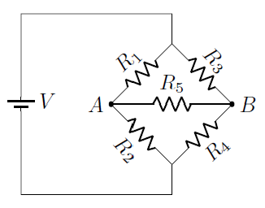
Another example is the one shown below, with two batteries in the circuit. Notice that, if either battery were replaced with a wire, then two of the resistors would be in parallel, and in series as a group with the third resistor. This example is actually a physically relevant one. Up to this point, we have usually assumed that the batteries we use are “ideal”, that is, they have no internal resistance to current. Although realistic batteries will have little such internal resistance, it is not zero, and so solving situations like the one shown is important. This is the reason for the gray boxes in the circuit diagram – each box represents a realistic battery, and these two batteries are connected at both ends to a resistor. This might be the situation if you were using jumper cables to recharge the battery of a friend’s car, which is why the batteries “point” in the same direction.
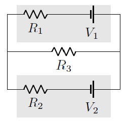
In this lesson, we will study how to use Kirchhoff’s laws to write down equations to solve for the currents and voltages for situations such as these. One part of the process will be to formalize how to write down equations from the loop rule. You may remember in Lesson 30 I talked about the high and low voltage sides of a circuit element; keeping track of this issue will be important. We also need to make a detour into the idea of independent equations, so we write down exactly the number of equations we require. Finally, we will do an example, and show some good tricks to solving the loop and junction rule equations.
Here are the objectives for this lesson:
State the number of independent loop and junction equations for a given circuit.
Use the junction and loop rules to write down a set of independent equations relating the electrical elements of a circuit.
Given a set of equations for a circuit from Kirchhoff’s rules, solve for the unknown currents or voltages.
Using the loop and junction rules¶
The junction rule¶
For now, let’s assume that we are given a circuit diagram, along with arrows representing the currents through each branch of the circuit. We will come back to choosing these arrows later in the lesson. Writing down an equation from the junction rule is relatively straightfoward: simply add up the currents whose arrows point into the junction, and set this equal to the sum of the currents leaving the junction.
Make sure you follow the branch! Remember that a branch is made of circuit devices and wires that are all in series, so they have the same current. An arrow giving the current in the branch, that is drawn at one point of that branch, shows the direction of the current in the whole branch. I see many students not following the branch to the end, or ignoring the current coming into or out of a junction from a particular branch. Also, remember that the branch changes when you pass through a junction, so elements on different sides of a junction will have different currents.
The loop rule¶
The loop rule is more complicated conceptually, so I will go through this in a little detail. Remember from Lesson 30 that the “loop” in the loop rule is a path that you choose to move around the circuit, keeping track of the voltage changes as you pass through each circuit element. The loop can be either with the current direction or against it; often, the same loop will be both, for different branches of the circuit. Because this loop is chosen completely independently from the directions of the currents, when we find the voltage change of a circuit device, it is important to know both which way we are going around the path, as well as the properties of the device itself.
A battery is easier to consider, so I will start with it. Recall that the long line of a battery symbol refers to the high voltage side, while the short line is the low voltage side. So if, when traveling along the loop you choose, you go into the battery on the short line, and out the long line, there is an increase in voltage. Traveling in the opposite direction leads to a decrease in voltage. This is illustrated in the figures below for a battery with voltage \(V\); notice that the direction of the current through the battery is irrelevant!
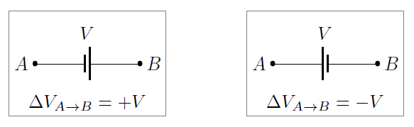
When moving along the loop through a resistor, both the direction you move through the resistor and the direction of the current matter. A battery comes already with a high and low voltage side, but a resistor does not. Think of it using the hydraulic analogy – a waterfall has a definite direction, but a water pipe does not. Either end of the pipe can be the place where the water comes into the pipe.
Current will enter into one side of the resistor, and the resistor will take some of the electrical energy of the charges to use for other purposes. The charges then leave the resistor out the other end, with less energy. If you think about what that means, the side of the resistor where the current comes in is the high voltage side, and where it leaves is the low voltage side. This is dependent on the current direction. I can take the same resistor, flip it around, and then the opposite side from before will be the high voltage side.
With this in mind, we can use Ohm’s law to find the voltage change \(V = IR\) due to a current \(I\) and resistance \(R\). The sign of the voltage change is given in the diagrams below, again depending on which way the current for that branch points relative to the direction you travel around the loop.
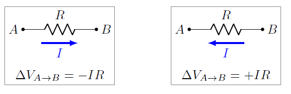
An example circuit¶
Now I will go through part of an example to find the loop and junction rules for a particular circuit. You will find the remaining equations as practice problems. We will start with the circuit below, where the current directions are already given by the blue arrows. There are also labels for the junctions to help explain the process.
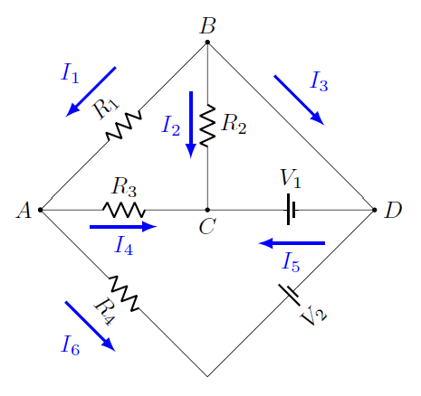
Hopefully you can see that there are four junctions and six branches for this circuit. Let first write down the junction rules for junction \(A\). This is the meeting point of three branches: \(AB, AC,\) and \(AD\). For two of these branches, the current arrows point away from the junction; these are the currents \(I_4\) for \(AC\) and \(I_6\) for \(AD\). The third points toward it, with current \(I_1\) along \(AB\). This means that the junction rule for \(A\) is
Now let’s find the junction rule for \(D\). Again, three branches meet here: \(AD, BD,\) and \(CD\). For branches \(BD\) and \(CD\), it is probably obvious what is happening – current \(I_3\) comes into \(D\) along \(BD\), and current \(I_5\) leaves \(D\) along \(CD\). However, you have to be careful to include current \(I_6\) as coming into \(D\) along the branch \(AD\). This branch is drawn as two “sides”, but it only counts as one wire, since no other wire connects with it between \(A\) and \(D\). Thus, the junction rule at \(D\) is
Problem: Find the junction rule equations for junctions \(B\) and \(C\). Answers: \(I_1 + I_2 + I_3 = 0, I_2 + I_4 + I_5 = 0\)
Next we turn to the loop rule equations for the circuit. To help find the voltage differences, I have taken the same circuit diagram from before, but labeled the high voltage sides of each circuit element with a ‘\(+\)’, and the low voltage side with a ‘\(-\)‘. As I talked about above, for a battery, this just depends on how the battery is drawn, but for resistors, it depends on the direction of the current arrow.
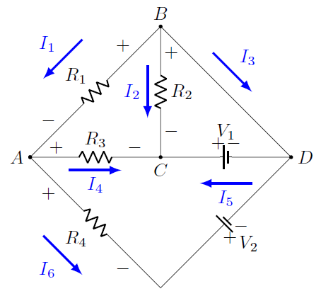
For the first loop, I will use the path \(ACDA\), in that clockwise order. This means we pass through resistors \(R_3\) and \(R_4\), as well as both batteries. Starting at \(A\) and taking each element, one at a time, we first pass through \(R_3\). This resistor is on the branch with current \(I_4\), and we are moving in the same direction as the current. Thus, the path enters the high voltage side (the ‘\(+\)’) and leaves the low voltage side (the ‘-‘), and the change in voltage across \(R_3\) will be \(-I_4 R_3\).
Next we move through junction \(C\) to reach the battery \(V_1\). We enter the high voltage side and leave the low voltage side, so the change in voltage is \(-V_1\). Notice this is true even though we are going against the current!
Finally, we travel along the branch \(DA\), with current \(I_6\). First, we encounter the battery \(V_2\), going from low voltage to high. This gives a change in voltage of \(+V_2\). Then we reach the resistor \(R_4\), but now we are going against the current. This means the change in voltage is \(+I_6 R_4\).
We have now gone completely around the loop, and returned to our starting point. This means that the sum of all of these voltage changes must be zero (by conservation of energy), so our loop equation is
If we had traveled through the loop counterclockwise (i.e. gone in the order \(ADCA\), all the terms in the equation would have the opposite sign, but it would be mathematically equivalent.
As another example, let’s try the loop \(ADBA\), or the outside of the circuit. I will travel around this loop counterclockwise, just to see how things change. For the branch \(AD\), this means I get the same results as the last loop, but with opposite signs. Thus, the change in voltage going from \(A\) to \(D\) along the bottom is \(-I_6 R_4 - V_2\).
Going along the branch \(DB\), there is not a circuit element here, so there is no change in voltage. Notice this means that the junctions \(B\) and \(D\) have the same voltage. A consequence of this is that we could redraw the circuit, if we wished, with the points \(B\) and \(D\) merged! This would have the advantage of eliminating the current \(I_3\), but I will leave the circuit diagram as it is for this example.
For the final branch, \(BA\), we are traveling with the current, so the voltage change across the resistor \(R_1\) is \(-I_1 R_1\). We have now returned to our starting point, giving us the equation
Notice that this equation tells us at least one of the currents \(I_1\) and \(I_6\) is in the wrong direction. Specifically, since all of \(R_1, R_4\), and \(V_2\) are positive, then one or both of \(I_1\) and \(I_6\) are negative. This is a feature, not a bug – it tells us that the physical direction of the current is in the opposite direction to the arrow direction chosen. Much like we can chose either up or down as the \(+y\) direction, the arrows are just a mathematical choice. If the equations give us a negative number, then the current simply flows in the opposite direction to the chosen arrow.
We have now gone through two of the possible loops for this circuit. It turns out there are seven total loops, so there are five more equations to find.
Problem: Find the remaining loop rule equations. Answers: Up to an overall sign, and the order of the equations, your equations should be the following: $\( \begin{eqnarray*} I_1 R_1 - I_2 R_2 + I_4 R_3 &=& 0 \\ V_1 + I_2 R_2 &=& 0 \\ I_1 R_1 + V_1 + I_4 R_3 &=& 0 \\ I_1 R_1 - I_2 R_2 - V_1 + V_2 + I_6 R_4 &=& 0 \\ -I_3 R_4 + I_2 R_2 + V_2 + I_6 R_4 &=& 0 \\ \end{eqnarray*} \)$
Independent equations¶
As we just saw, using Kirchhoff’s laws entails writing down equations resulting from the loop and junction rules. One key part is deciding how many of each kind to use; as we will see, there are actually more equations than we actually want! Knowing the correct number of equations gets into the issue of independent equations. To motivate this idea, let’s start with an example from geometry.
Suppose you have two lines in the \(x-y\) plane. Assuming they are not parallel, they will intersect at exactly one point. The coordinates \((x, y)\) of this unique point will be the solution to the two linear equations describing the lines.
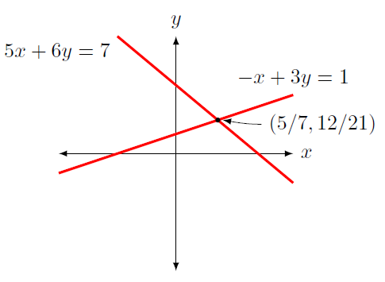
The equations for the lines shown in the previous figure are
We can solve these equations in a couple of ways, but one easy way is to solve the second equation for \(x\), and substitute this into the first equation. This gives that \((x, y) = (5/7, 12/21)\).
Now, what if we tried to solve the new set of equations
We would find that an infinite number of \((x, y)\) values meet these conditions! In particular, if we use the method we outlined above, then solving for \(x\) in the second equation and substituting into the first simply gives \(0 = 0\). Obviously, the problem is that both equations in the second set describe the same line – the first equation is now -5 times the second. The two equations give exactly the same information about the points \((x, y)\). When we have equations like these, we call them dependent equations. When we have a situation like the first set of equations, these equations are known as independent equations. Each equation gives new information about the solution we are looking for (the intersection point). Said differently, in a set of independent equations, we cannot write any particular equation in terms of the others. Here, for the second set, one equation is simply the multiple of the other, but the relationships can be more complicated than that.
Now let’s return to Kirchhoff’s laws and analyzing a circuit diagram. If a circuit has \(J\) junctions, then there are only \(J - 1\) independent junction equations. This means that one of the equations can be written in terms of the others. Notice this does not mean a specific equation, just that any one of them can be discarded, and the rest are sufficient.
By the way, it is fairly easy to prove that \(J - 1\) is the number of independent junction equations. To do this, take a circuit and pick a junction at random. This junction will have, say \(N_{in}\) currents going into it and \(N_{out}\) currents going out of it. Now think about the rest of the circuit. Taken as a whole, all of the other junctions will have the same currents, but now it will be the \(N_{in}\) that are going out of the rest of the circuit, and the \(N_{out}\) going into it. The sum of the junction equations for the rest of the current will then be the same as the equation for the junction we picked.
For loop rules, if a circuit has \(J\) junctions and \(B\) branches, then the number of independent loop equations is \(B - J + 1\). It is a bit harder to prove this is true, but not too difficult. Notice that this gives the total number of independent equations, both loop and junction, to simply be the number of branches of the circuit.
Number of independent equations: For a circuit with \(J\) junctions and \(B\) branches, there are \(J - 1\) independent junction equations, \(B - J + 1\) independent loop equations, and \(B\) independent equations for the circuit.
Let’s go through a couple of examples and see how this works in detail. Below is the diagram for a circuit with two junctions, \(A\) and \(B\), along with a choice of current directions for its three branches.
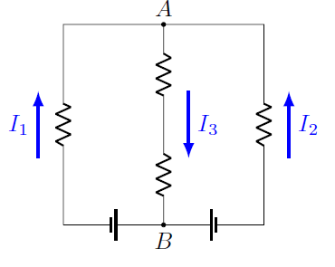
Based on these directions, we have the two junction equations
These two equations are exactly the same – we only need one of them! Again, notice that current \(I_3\) goes into \(A\) and out of \(B\); the situation is reversed for current \(I_1\) and \(I_2\). This is why the two equations are the same.
Here is a more complicated version, a circuit now with three junctions and five branches, with the current directions along the branches already chosen.
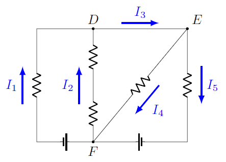
With these current directions, the junction equations are now
For three junctions, only two junction equations will be independent. Why is this? One way to think of it is the argument we had before, based on the currents into and out of the rest of the circuit. Pick the junction you like least in the circuit; say this is the junction \(F\). The currents \(I_1\) and \(I_2\) going out of \(F\) will go into junctions \(D\) and \(E\) as a group (in this case, just junction \(D\)). Similarly, the currents \(I_4\) and \(I_5\) going into junction \(F\) come out of \(D\) and \(E\) as a group (here, just \(E\)). The current \(I_3\) does not touch junction \(F\) at all, since it stays within the group \(D\) and \(E\).
Another way to see this is more mathematical. Take the first two junction equations above and add them together. Recall this means that we add the left-hand side of the \(D\) to the left-hand side of the \(E\) equation, and the same for the right-hand sides. This gives
This gives the equation for junction \(F\). In other words, the junction equations \((D), (E),\) and \((F)\) satisfy \((D) + (E) = (F)\) as an equation of equations. In particular, notice that it was current \(I_3\) that cancelled out – this was the only current that did not leave the group of junctions \(D\) and \(E\).
Problem: For the circuit below, state the number of independent junction equations, and then write down a possible set of such equations. Answer: There need to be four independent equations. One possible choice is $\( \begin{eqnarray*} A:&\ & 0 = I_1 + I_2 + I_3 \\ B:&\ & I_1 + I_2 + I_5 = I_4 \\ C:&\ & I_3 = I_6 + I_8 \\ D:&\ & I_6 = I_5 + I_7 \\ \end{eqnarray*} \)$
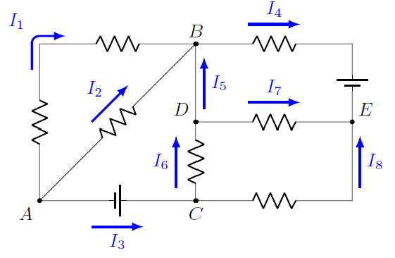
Example: Using Kirchoff’s laws¶
We have talked about how to find the loop and junction equations, as well as how many of each we need to use for a set of independent equations. Now, let’s put all of this together, and see how to use the equations to solve for unknown electrical properties. To start, I will use the circuit shown below. The voltages and resistances are \(V_1 = 12.0\) V, \(V_2 = 2.00\) V, \(R_1 = 2.00 \ \Omega\), \(R_2 = 4.00 \ \Omega\), and \(R_3 = 6.00 \ \Omega\). I will use Kirchhoff’s laws to solve for the unknown currents, both their magnitudes and directions.
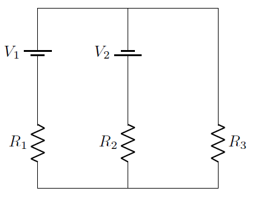
This circuit has two junctions and three branches. The first thing I want to do is choose a name and direction for the current in each branch. As discussed earlier, the choice does not have to match the actual physical direction of the currents. Once we solve for the numerical values, we will see if any choices are opposite to the actual current direction. To emphasize this point, I will intentionally pick directions I know cannot be right, by having all of them point upward! I have also labeled the two junctions \(A\) and \(B\).
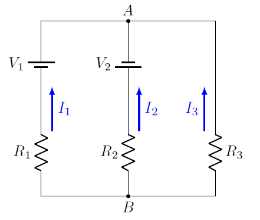
Once we have this choice of current directions, we can label the high and low voltage sides of the batteries and resistors. Remember this depends on the current arrows for the resistors, but not the batteries.
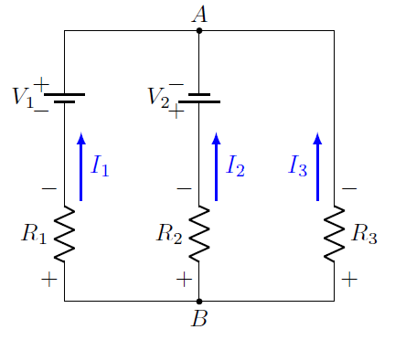
There are two junctions, so there is only one independent junction rule. Using either junction, we get
There are three possible loop rule equations, but only two of them are independent. It is a good policy to write all three of them down, even though we will only use two of them. First, some of the equations may be easier to use than others. In addition, if we do not use one of the loop rule equations to solve the problem, we can always use it later to double check our answer!
For the loop equations, going through each of the loops in a counterclockwise direction and starting at junction \(B\), we get
I will use the left and right loop equations to solve the problem, then use the outside loop to check the answer. Here’s a key point to help make the solution easier: the left and right loops both travel over the middle branch. This means that the current \(I_2\) appears in both of these equations. So I will solve the left loop equation for the current \(I_1\) in terms of \(I_2\), and the right loop equation for \(I_3\) in terms of \(I_2\). Then, substituting both of these relations into the junction equation, I will have one equation for the unknown \(I_2\). After I find this number, I can substitute it back into the other equations.
Starting with the left loop, if I solve for \(I_1\), I get
Similarly, with the right loop, I get
If I now substitute these appropriately into the junction equation, I have
The common denominator is \(R_1 R_3\), so multiplying the equation by this gives
Collect all of the terms that contain \(I_2\) on one side of the equation, and the remaining terms on the other. Factor out the common \(I_2\) to get
or
Notice this is a negative number! I am going to go ahead and substitute the values here, because I have an important point to make. Plugging in the givens from above, we find \(I_2 = -2.00\) A. This means the current flows in the direction opposite to the chosen direction. Therefore, through the middle branch, a current of 2.00 A flows from junction \(A\) to junction \(B\).
Commit to your choice of current directions! Based on our choice of current directions, \(I_2\) is negative. This means that everywhere you see the quantity \(I_2\), you must substitute in this negative number. If you change it to a positive because you “know” it is wrong, you will get incorrect answers. The equations depend on your original choice, so you have to go with it.
Now that we have \(I_2\), we can plug it into the equations above for \(I_1\) and \(I_3\) to get
and
Lastly, we can double check our answers. We have already used the left and right loop rules, as well as the junction rules, to get these numbers. If we use them again, then we are not really checking our work! We have to use an equation that we did not use before; the only remaining one is the outside loop equation. If we got the correct numbers, then we should get identically zero:
So everything checks out!
Problem: For the circuit diagram below, find the magnitude (in mA) and direction of the currents through each of the three resistors. Assume that \(V_1 = 6.00\) V, \(V_2 = 4.00\) V, \(R_1 = 10.0 \ \Omega, R_2 = 9.00 \ \Omega,\) and \(R_3 = 7.00 \ \Omega\). Answers: \(I_1 = 305\) mA towards junction \(B\); \(I_2 = 117\) mA towards junction \(B\); \(I_3 = 422\) mA towards junction \(C\).
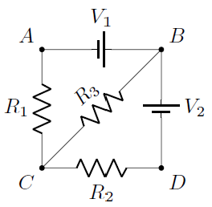
Summary¶
Kirchhoff’s laws provide the equations you can use to analysis any resistor circuit. They do not require any special conditions on the connections between resistors, or the number of batteries in the circuit. Although solving them by hand can be onerous, it should give you a good intuition about how such a process works. In a workplace application, such as designing circuits for a living, there are matrix methods to solve these using a computer. Do this yourself, though, develops your sixth sense about when the computer is spitting out garbage solutions!
The next lesson will introduce another type of circuit element, the capacitor. Although it shares some superficial similarities with a battery, it has key differences as well. The interaction of resistors and capacitors in a circuit can be interesting as well, leading to currents that change in time.
After this lesson, you should be able to:
For any circuit, write down an independent set of loop and junction equations for the circuit.
Solve for the unknown electrical properties of a circuit, using the loop and junction equations for that circuit.